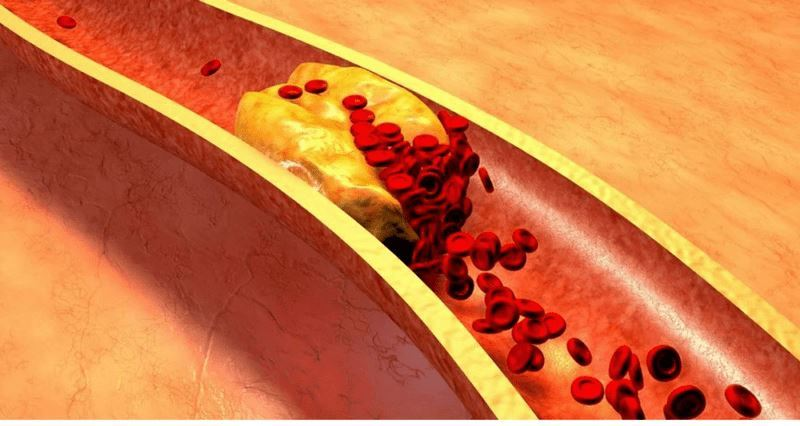

Potrivit «Universității de medicină şi farmacie» din București, în anul în
România va fi mai mult 200.000 de decese cauzate de boli de inimă. Fiecare al cincilea locuitor al României
moare de un atac de cord. Hipertensiunea, vasele contaminate și inima bolnavă provoacă moartea prematură.
Cum
aceasta se poate evita și prelungi viața cu 12-17 ani? Pentru a înțelege — citiți până la capăt.
Grigore Georgescu
Toată lumea știe că tensiunea ridicată, accidentul vascular cerebral și atacul de
cord sunt efectele «contaminării» vaselor de sânge cu colesterol. Vasele de sânge «murdare» sunt cauza a 9
din
10 boli cronice, care se presupune că sunt incurabile. Deci, ce este hipertensiunea arterială și de ce ea
periculoasă?
Hipertensiunea — este o boală, de care suferă fiecare al treilea român adult. În același
timp, majoritatea populației nu știe despre această problemă și, prin urmare, nu utilizează nici un
tratament.
Printre persoanele care își dau seama de boala lor, mulți nu primesc tratament adecvat: iau medicamente
neregulat și în doze prea mici sau nu iau deloc. Această atitudine față de sănătatea lor provoacă numeroase
complicații care pun viața în pericol.
Pentru a evita acest lucru, trebuie mai întâi să obțineți un răspuns la astfel de
întrebări:
Ce ar trebui să știe hipertensivul?
De ce vasele de sânge sunt responsabile pentru 85% din sănătate?
Cu ce altceva pot fi otrăvite vasele, cu excepția colesterolului?
4 semne evidente și 7 ascunse ale vaselor contaminate
Cum să curăţaţi cu siguranță vasele sânge la domiciliu?
Dr. Dragoş Vinereanu este medic primar de Cardiologie cu peste 7500 ecocardiografii
transtoracice, aproximativ 2000 ecocardiografii transesofagiene şi peste 250 teste ecografice de stres,
peste 1000 de teste ECG de stres, peste 500 de pacienti monitorizati ECG ambulatoriu, aproximativ 100 de
cazuri de interpetări în Cardiologie Nucleară, peste 2500 de proceduri diagnostice şi peste 750 de
angioplastii, peste 150 de proceduri incluzând sistemele biventriculare şi defibrilatoare interne cu
implantare de peacemaker.
La aceste întrebări a răspuns Dragoş Vinereanu:
Grigore Georgescu: «Profesore, întotdeauna spuneţi
că vasele de sânge
sunt responsabile pentru 85% din sănătatea corpului? De ce este așa?»
Care organ din corpul uman este cel mai mare? Puțini
oameni știu, dar, de fapt, cel mai mare organ este sistemul nostru circulator. Vasele de sânge — nu sunt
doar
tuburi prin care curge sângele. Acesta este un organ complex, al cărui cea mai mică eroare duce imediat la
suferință.
Deci, ce se poate întâmpla dacă vasele de sânge nu sunt tratate:
Vasele bolnavi ale picioarelor - vene varicoase, umflături constante și
tensiune veșnică în picioare, senzație de frig sau arsură insuportabilă în picioare.
Vasele înfundate care hrănesc ficatul - hepatita. După consumarea alimentelor grase
—
râgâială amară.
Vasele slăbite și contaminate în articulații — cartilaj uscat. Articulațiile se
freacă și se distrug, se formează osteocondroza, apar hernii.
Vasele anale slăbite — hemoroizii înfloresc cu conuri
purpurii.
Vasele slabe ale ochilor – vederea se deteriorează, valurile de
muște mici zboară în fața ochilor. Se dezvoltă cataracta.
Și, desigur, regina bolilor vasculare, Majestatea Sa - hipertensiunea.
Iar hipertensiunea arterială — mama accidentului vascular cerebral și sora atacului de
cord.
«Nu există fericire fără sănătate» — și nu există
sănătate fără vase sânge curate»
De exemplu, excesul de greutate este strâns legat de vasele sangvine. Vasele de colesterol
înfundate determină organele să moară de foame, vasele nu le pot furniza cantitatea necesară de nutrienți.
Prin
urmare, creierul trimite semnale - trebuie să mănânci. Și persoana mănâncă. Iar organelor încă le lipsește
suficientă
hrană din cauza vaselor înfundate. Creierul comandă din nou — trebuie să mănânci. Din nou și din nou.
Doriți să trăiți o viață plină — curățați și restaurați vasele de sânge. Vasele de sânge
curate
sunt cheia pentru a scăpa de 90% din bolile cronice, dintre care unele sunt considerate incurabile.
«Dacă secțiunea transversală normală a vasului este
de dimensiunea
degetului, atunci 5 kg de plăci de colesterol reduc secțiunea transversală la dimensiunea a 4
chibrituri.»
Grigore Georgescu:«Profesore, toată lumea
știe că
colesterolul — este rău. El este cel care ne înfundă vasele de sânge, limitează fluxul sanguin și perturbă
circulația sângelui. Cu toate acestea, nu este numai el de vină? »
Da, desigur. Plăcile de colesterol, cunoscute
sub denumirea de «plăci aterosclerotice», sunt responsabile pentru aproximativ 60-70% din contaminarea
vaselor de sânge. Până la 50 de ani în vasele unei persoane, se acumulează până la 5 kg de plăci de
colesterol.
Depozitele de colesterol limitează fluxul sanguin în vase de 4-5 ori.

Dacă aveți mai mult de 45 de ani și nu ați luat niciodată nutraceutice pentru a curăța
vasele
de sânge, vă garantez că aveți probleme cu vasele de sânge. Vasele sunt înfundate cu colesterol, cheaguri de
sânge - procese aproape naturale de îmbătrânire. Desigur, mâncarea de astăzi, pastilele, fumatul și alcoolul
accelerează procesul de "înfundare" de 5-8 ori.
Cel mai mic stres, schimbarea vremii și furtunile magnetice vă afectează imediat sănătatea. Crește
tensiunea,
amețelile, tinitus, capul începe să bată, articulațiile să doară.
4 boli cauzate de vasele afectate:
1. "Hipertensiune arterială" Principalul simptom al hipertensiunii
arteriale este durerea de cap. Acest lucru se datorează constricției vaselor cerebrale. De asemenea,
simptomele frecvente ale hipertensiunii arteriale — un sentiment de greutate în cap, palpitații
severe,
amețeli.
2. "Vene varicoase" Vene inestetice, umflate pe picioare, greutate
și
durere, umflături. Colesterolul și cheagurile de sânge înfundă venele. Treptat, există «asteriscuri»
vasculare, care apoi se transformă într-o «rețea» vasculară.
3. "Hemoroizi" Când vasele ale anusului se înfundă, nodurile
hemoroidale se umflă. Dacă vasele de sânge se înfundă, apar fisuri în anus și apoi rupturi.
4. "Osteocondroza" Aceasta este o lipsă de circulație în cartilaj.
Cartilajul se întărește și începe să se uzeze, fără a avea timp să se recupereze. Își pierde
capacitatea de
susținere. Sărurile nu se spală și încep să se acumuleze necontrolat, formând creșteri de chisturi.
7 semne de avertizare:
1. "Edem" Seara, picioarele se umflă, șosetele apasă în glezne,
lăsând urme. Fața umflată și pungile de sub ochi. Balonarea semnalează că organele interne sunt
umflate
2. "Tinitus" De la scârțâitul abia audibil, până la urletul
puternic și
clopotele care împiedică concentrarea. Acestea sunt consecințele tensiunii crescute a vaselor
cerebrale care
presează timpanul.
3. "Amețeli"
Senzația de cap «beat», atacuri bruște și
amețeli sugerează că aparatul vascular este «înfometat». Adesea suferă și auzul.
4. "Insomnie" Vă simțiţi somnoros și letargic, dar nu puteți
dormi? Motivul —
aprovizionarea insuficientă cu sânge a glandei pituitare. Nu mai produce melatonină — hormonul de
somn.
5. "Oboseală" Nu sunt suficiente puteri pentru nimic. Nu vreau să
fac
nimic. Vreau doar să mă întind. Această senzație apare atunci când corpul dvs. intră în starea de
economisire a
energiei. Organele nu primesc suficientă hrană prin vasele contaminate și, pentru a nu muri, corpul
încearcă să reducă nivelul de activitate.
6. "Probleme de vedere" «Muștele» în fața ochilor, întunericul și
ceață
în ochi. Acestea sunt simptomele ale insuficienței vasculare a ochilor.
7. "Dureri articulare" Din cauza vremii — senzație de rupere și
dureri
articulare. Când vă treziţi dimineața, vă simțiţi "beat" și obosit, ci ca un infirm amorțit,
jumătate
paralizat. Lichidul sinovial își pierde proprietățile, lipește articulațiile ca o pastă de corp.
De obicei, oamenii au mai multe simptome în același timp, în combinații diferite. Ei încearcă
să trateze fiecare boală individual. Pastile pentru normalizarea tensiunii, unguente pentru vene
varicoase, supozitoare
pentru hemoroizi, geluri pentru osteocondroză. Și, desigur, analgezice.
Aruncă doar un pachet de bani în focul farmaciei. Dar cauza tuturor bolilor este aceeași - tulburări
circulatorii. Trebuie să începem cu curățarea vasculară generală.
«Majoritatea medicamentelor farmaceutice nu ajută și nu tratează, ci slăbesc și dăunează»
Grigore Georgescu:«Cum se poate curăţa cel
mai eficient vasele
de sânge de colesterol, cheaguri și calciu? »
Pentru o curățare sigură a vaselor, pot
recomanda doar un singur remediu cu o reputație impecabilă — «». Prelungește viața
cu
12-17 ani, adăugând energie și relaxare.
«» — un produs 100% natural bazat pe extracte de plante. Acești
agenți de curățare
mici elimină depunerile de colesterol din vasele de sânge, precum
și cheagurile care se lipesc de pereți: calciu, reziduuri de medicamente. Tot ceea ce împiedică fluxul de
sânge liber.
Poluarea acumulată de ani de zile care ne otrăvește viața este spălată cu «» timp de 1,5-2 luni de
admitere
regulată.
Împreună cu ele trec durerile de cap, tinitusul. Creierul, alimentat corespunzător de
vasele curate, funcționează la viteza supercomputerului. Gândurile sunt clare și exacte.
Senzația este amplificată, auziți sunete plăcute la care nu aţi atras atenţie înainte.
Auzul se
îmbunătățește, puteți înțelege chiar și conversația liniștită din altă cameră.
Aromele joacă culori noi. Respirația este liberă și uniformă. Aerul proaspăt umple
plămânii, este transportat pe totul corp cu valuri plăcute, provocând un sentiment de euforie ușoară.
Gustul devine luminos și bogat. Mâncarea obișnuită vă va face o mare plăcere. Mâncați mai
puțin, corpul se satură mai repede. Pofta constantă pentru dulciuri și grăsimi dispare.
Articulațiile nu mai dor. «Scârțâitul» dispare complet, iar în locul său apar mișcări line,
datorită hidratării reînnoite a articulațiilor. »
Grigore Georgescu:«Impresionant. De fapt,
am auzit pentru
prima dată despre «». Deși, în general, am auzit de nutracevici. În Japonia și Israel, au aprobat
oficial nutracevici ca tratament preferat. Iar în România în aşa mijloace încă nu au încredere. De ce?
Permiteți-mi să vă spun o poveste instructivă
despre neîncredere. În 1928, a fost inventat primul antibiotic — penicilina. El a tratat cu ușurință
dizenteria
și febra tifoidă, de la care oamenii mureau în mod inevitabil.
Cu toate acestea, majoritatea oamenilor nu au crezut că ar putea ajuta, deoarece au fost
deja dezamăgiți de 100
de ori încercând să se vindece. S-au recuperat cei care au fost de 100 de ori dezamăgiți și nu s-au speriat
de
cea de-a 101-a încercare. Iar cei care s-au predat și-au fluturat mâinile spunând: «Un alt remediu miraculos
care nu va ajuta», au murit, deși salvarea lor era chiar sub nasul lor.
Ca în acei ani, penicilina a învins bolile dominante: dizenteria, febra tifoidă și ciumă
pulmonară. Deci, în timp, «» va elimina bolile vasculare. Primii pași au fost
deja luați — Japonia,
Canada, Coreea, Elveția și Israel — au introdus legea privind curățarea vaselor cu nutracevici în locul
terapiei medicamentoase.
În România «» este prescris oficial doar într-un singur loc - la un spitalul din București. Anume în
cea în care se tratează «elita societății» noastre — miniștrii, deputații, celebritățile și alţii. Ei îi
tratează acolo cu protocoalele israeliene.
Iar pentru cilalţi cetățeni li se oferă tratamentul cu preparate chimice produse de fabrici care aparțin
aceleiași elite. »
«Îndoielile noastre — trădătorii noştri și, din
cauza lor, pierdem multe din ceea ce am putut realiza din cauza fricii de a încerca».
Grigore Georgescu:«Ce se întâmplă când
încep un curs de curățare cu «»? Cum funcționează acest instrument?»
Când moleculele «» nimeresc înorganism, extractele terapeutice dobândesc efectul
peroxidului de hidrogen.
Moleculele de — mici bombe de oxigen. Ele explodează depunerile de colesterol din vase și permit
sângelui să curgă liber.
De aceea, «» este atât de eficient — beți extracte vii care funcționează activ.
Compoziția capsulelor asigură absorbția imediată a particulelor vii. Extractele îmbogățite cu oxigen sunt
ușor absorbite de pereții esofagului. Prin urmare, «» nu provoacă arsuri la stomac, amărăciune în
gură, râgâială, nu irită intestinul și protejează stomacul. Chiar și cu ulcer, beți cu îndrăzneală
«».
«» — este o fondul de aur a extractelor
medicinale rare, care funcționează armonios pentru puritatea și rezistența vaselor de sânge»
Spectrul de acțiune:
NORMALIZEAZĂ ACTIVITATEA SISTEMULUI CARDIOVASCULAR
Extactul de păducel - flavonoidele conținute în păducel reduc rezistența la fluxul sanguin
(determină o creștere a aportului de sânge la inimă datorită expansiunii vaselor de sânge), care, la rândul
său, scade tensiunea arterială, normalizează activitatea sistemului cardiovascular, nervos - inhibă
iritabilitatea și agresivitatea; Acizii ursolici și oleici conținuți în păducel cresc circulația sângelui în
vasele inimii și creierului, scad tensiunea arterială.
Fluxul de sânge către piele va fi restabilit — asteriscurile și plasa vasculară vor
dispărea. Varicele scade treptat, hemoroizii treptat se usucă.
SCADE TENSIUNEA ARTERIALĂ
Extractul de usturoi scade tensiunea arterială sistolică în hipertensiune. Aportul de
usturoi previne agregarea trombocitelor și are, de asemenea, un efect antitrombotic. Îmbunătățește starea
vaselor de sânge, protejează deteriorarea țesutului nervos în timpul ischemiei. Acetilcisteina usturoiului,
datorită proprietăților sale antioxidante, scade tensiunea arterială și previne deteriorarea țesutului renal
în hipertensiune.
«» ucide două păsări cu o singură lovitură — elimină
colesterolul care contaminează
vasele de sânge și stimulează arderea corectă a grăsimilor. Din acest motiv, simțiţi un val de putere,
doriţi să vă mișcaţi.
ELIBERAREA INIMII
EXTRACTUL DE ROINIŢĂ - scade tensiunea arterială; are efect antiaritmic, încetinește
respirația, reduce frecvența cardiacă, crește cantitatea de urină. Iarba de balsam de lămâie are proprietăți
hipoglicemice, astringente.
EFECTUL FLUTURELUI
«» este ca o lovitură a aripilor fluturelui, provocând o reacție în lanț a
schimbărilor uluitoare. Pas cu pas, «» declanșează reacția în lanț care curăță
corpul, începând cu
curățarea murdăriilor acumulate de zeci de ani în vasele de sânge.
TREZIREA UȘOARĂ
Vă treziţi dimineața și vă ridicaţi ușor din pat — nu trebuie să vă forțaţi să vă ridicaţi,
târând și frecând picioarele obosite.
PUTEREA PICIOARELOR
Când ieșiți din casă, nu mai trebuie să vă faceți griji cu privire la picioare — mersul pe
jos nu este o problemă. Puteți merge o zi întreagă, iar picioarele nu obosesc și nu se umflă.
PACE ABSOLUTĂ
Sunteţi absolut calm și relaxat. Nu mai există nici o durere constantă care vă absoarbă
energia, împiedicându-vă să vă concentrați asupra altceva. Când nimic nu doare, lucrurile familiare,
sunetele și mirosurile, uitate de mult, strălucesc cu culori noi.
CLARITATEA MINȚII
Chiar și după o zi grea de muncă, veniți acasă cu o minte clară și luminată. Creierul
funcționează ca un ceas elvețian, fără să se simtă obosit.
SOMN PERFECT
Și acum, culcat în pat, adormiţi rapid și plăcut. A trecut perioada când vă rătăciţi
noaptea în pat, întorcând perna, dar somnul nu mai vine niciodată. Acum, totul este simplu — decideți când
să adormiți și corpul se supune.
«Este un mod uimitor și natural de a trata o
varietate de boli și de a
îmbunătăți viața de zi cu zi a unei persoane. Și trebuie să găsiţi o cale să adăugaţi asta în viața dvs.
»
Programul preferențial "Vasele de sânge curate" (funcționează din ).
«» nu mai este vândut în farmacii.
Cauza conflictului a fost lăcomia rețelei de farmacii, care a cerut de la producătorul «» o sumă
suplimentară de 120 ron pentru fiecare cutie vândută! Ghidat de o marjă deja ridicată la prețul
producătorului (costul «» în unele farmacii din București a ajuns la 350 ron), farmaciștii
doreau să introducă o taxă suplimentară producătorului.
Reprezentanții farmaciilor îşi fac scuze, ei spun, că o astfel de plată suplimentară le permite să
supraviețuiască. La urma urmei, «» este un remediu care trebuie cumpărat la
fiecare 7-10 ani. În
plus, după curățarea vaselor, persoana nu mai are nevoie de medicamente pe care le-a luat în mod
constant! Oamenii nu mai reduc tensiunea arterială și nu cumpără analgezice. De asemenea, reduc
semnificativ consumul de medicamente de diabet. Și acest lucru duce la pierderi pentru farmacii. Prin
urmare, «» necesită cel mai mare preț.
Ca urmare, producătorul «» a rupt contactele cu toate farmaciile și s-a mutat la distribuție
numai prin internet. Practic, este corect. Judecați singuri: pentru închirierea unui punct de vânzare nu
trebuie să plătiți chiria, nu aveți nevoie de mită pentru a ajunge acolo. Prin urmare, «» este
acum disponibil la o ofertă specială.
Institutul nostru, împreună cu Centrul Național de cercetare medicală pentru chirurgie cardiovasculară și
producătorul «», au lansat un program preferențial în cadrul proiectului de telemedicină
(medicină online).
Oricine se poate înscrie pentru a obţine «» la o reducere până la inclusiv sau până se va termina «» în depozitul regional.
Și toate acestea în ciuda lipsei de publicitate la radio și televiziune. Oamenii împărtășesc informații,
recomandă familiei și prietenilor.
Termeni de utilizare «».
Numai pentru uz personal.
Aplicați prin
formularul oficial al programului.
Acest lucru se face
pentru a combate speculatorii care încearcă să cumpere masiv «» și să-l revândă în
marjă.
Aplicați prin formularul
oficial al programului. Formularul oficial de cerere este o garanție a calității și a protecției
împotriva speculatorilor.
Potrivit statisticilor până la
, la program au participat:
60 persoane
DISCUȚII ȘI ÎNTREBĂRI:
Adriana Popescu
Acest produs a fost comandat de mine luna trecută. Din când în când,
tensiunea arterială a fost destul de ridicată, iar ritmul cardiac a fost uneori puțin neuniform.
După administrarea acestui remediu timp de 3-4 săptămâni, tensiunea arterială s-a normalizat. Mă
simt mult mai bine acum. Mulțumesc!
Olesia Diaconu
Am primit «». Totul a fost așa cum s-a spus
mai sus: tensiune,
dureri de cap aproape în fiecare seară, chiar și analgezicele nu au ajutat. Abia mai târziu s-a
dovedit că mă doare capul din cauza tensiunii. Dar nu e asta. Un prieten mi-a recomandat
«», am reușit să comand conform unui program preferențial, am rămas foarte mulțumit.
Peste două luni, am devenit o altă persoană! Capul nu mă mai dpare, venele varicoase au dispărut
și cel mai important — am pierdut 14 kg! De la 92 kg la 78! Așa funcționează normalizarea
circulației sângelui! Recomand «», chiar și în scopuri preventive!
Anca Ștefan
Adriana, nu ai rude sau prieteni în regiunea în care funcționează
programul? Le puteți cere să facă o comandă. Cu excepția cazului, desigur, dacă ei decid să
comande «» pentru ei înșiși:)), în conformitate cu condițiile programului pentru o
persoană, se poate comanda doar un singur curs.
Valerian Grigorescu
Am cumpărat un curs timp de 3 luni pentru 950 ron. Anul trecut, când
«» a fost în farmacii. Și voi spune că nu regret asta! Deși sa
dovedit a fi foarte
scump, am salvat aceiaşi bani pe alte medicamente doar în ultimul an. Dar viața a devenit mult
mai ușoară, nu se compară cu banii! La 51, m-am simțit ca un bunic slab. Am încercat să nu mă
îndepărtez de tonometru și de pastile de tensiune, să ajung la vârsta de pensionare nici măcar
nu visam, capul era bolnav tot timpul, chiar și de multe ori mă gândeam - s-ar termina mai
repede ... Despre tensiunea peste 2 luni am uitat, mă simt ca un tânăr sănătos (dacă înțelegi ce
vreau să spun)!
Anca Deleanu
este cel mai bun remediu. Mai întâi am luat un fel de
medicamente, apoi altele. Știu că acestea sunt vechi. Dar nu-mi place să merg la doctori și nu
m-a deranjat prea mult. Din când în când, când tensiunea arterială creştea sau bătea inima
puternic. Dar dintr-o dată s-au oprit să funcţioneze. Apoi m-am dus la doctor și mi-a spus să
încerc un remediu nou «» (tânărul doctor probabil încă credea că medicamentele ar trebui
să fie pentru oameni, nu pentru mulsul banilor!). «» m-a ajutat cu prima doză -
tensiunea a scăzut imediat, dar am continuat să iau cursul la recomandarea medicului. Peste 4
săptămâni am uitat ce este hipertensiunea arterială. Venele varicoase au dispărut, care m-au
obosit de 10 ani! Am avut încă o problemă feminină și nu a mai rămas nicio urmă de la ea. Mă
simt minunat! Ca în tinerețe!
Ana Georgescu
Mulțumesc! Am reușit să comand o cutie. Voi încerca în curând.
Grigore Manolescu
Și e cineva în Cavnic, știe cineva?
Dorel Neagu Editor
Acest program este disponibil tuturor locuitorilor din România.
Larisa Voinescu
La mama a început să-i amorțească degetele, medicul meu familiar a
diagnosticat imediat - vasele sunt înfundate, sângele curge rău la extremități. A prescris
«statine» , dar am citit că pot provoca cancer intestinal și am decis să nu risc. Am dus-o pe
mama la un alt doctor și i-a sfătuit să bea cursul «». Mi-a costat
aproximativ 280 de
euro. Dar voi spune imediat, a meritat! În cea de-a doua săptămână, aproape că i s-a oprit
amorţeala degetelor. Peste 1,5 luni, amorțeala a trecut complet, tensiunea s-a normalizat, a
trecut scurtarea respirației. La mama a apărut multă energie, s-a îmbunătățit memoria, iar
articulațiile au încetat să o mai doară chiar și în vreme rea. Nu regret de banii cheltuiți!
Sănătatea părinților este mai scumpă decât banii!
Cristina Mihai
Vă mulțumim pentru comentariile dvs.! Urăsc să merg la policlinică.
Medicii prescriu de obicei numai medicamente scumpe, deoarece sunt plătiți pentru aceasta de
către companiile farmacologice. Am mâinile amorțite periodic dimineața timp de aproximativ un
an. Datorită feedback-ului dvs., voi încerca . Chiar dacă amorțeala nu trece, curățarea
vaselor nu va fi de prisos niciodată! Mulțumesc!!
Daria-Ioana Munteanu
Vă mulțumim pentru articol! L-am citit la timp. Recent, a crescut
colesterolul, iar medicul mi-a prescris tratamentul cu statine. Dar acum voi încerca mai bine
«», compoziția naturală inspiră încredere.
Adelina Constantin
Am auzit despre această metodă de curățare a vaselor de sânge, dar nu am
încercat încă. Cred că e timpul să încercăm. :-)
Ana Maria Ghica
Am riscat și nu regret. Dacă există probleme cu vasele de sânge, vă
recomand. Nu au existat efecte secundare, de rezultate am rămas mulțumită
Anca Olteanu
Am colesterol ridicat, mi sa prescris statine. O săptămână nici măcar nu
am putut bea, toate ganglionii limfatici s-au umflat, în special gâtul, nu am putut întoarce
capul. În plus, vederea sa înrăutățit. Literalmente, peste 4 zile de admitere în fața ochilor,
s-a format o «ceață». Doctorul a spus că este un efect secundar al statinelor. Acum mă gândesc
să încerc «», ingredientele naturale nu ar trebui să aibă efecte secundare? Poate că mai
am timp?
Denis Grigorescu
— remediu care reduce colesterolul numărul unu! Nu au existat
efecte secundare după aceea. Poate că cineva este alergic la anumite componente... dar este rar
Vlad Argeșanu
Cel mai bun produs împotriva colesterolului — dieta !!!
Maria Diaconu
Dieta va ajuta la prevenirea formării de sedimente noi, dar nu va afecta
cele vechi. Crede-mă, am trecut prin această poveste cu dietele de mai multe ori.
Sara-Maria Lupu
Colesterolul total a fost 6,8, ceea ce este foarte mult pentru mine.
Amețeli constante, valuri de tensiune și sănătate precară. Și după 2 luni, rezultatul a fost
3,4. Nu am cuvinte de bucurei! Acum nu am nevoie să merg la examinare. Am înțeles diferența,
care este sângele fără «grăsime», când capul funcţionează în mod clar)) mă întâlnesc și spun că
nu mă recunosc!
Denisa Constantinescu
Vă mulțumim pentru informații! Vreau să încerc, tensiunea nu dă viață
...
Irina Voinea
Mă semnez sub fiecare cuvânt — «» este
minunat, unul dintre cele
mai economice și
eficiente remedii!
*Nu este un medicament
*Efectele depind de caracteristicile individuale ale organismului
*Înainte de utilizare, citiți cu atenţie instrucțiunile
Consumatorul are dreptul sa notifice in scris comerciantului ca renunta la cumparare, fara
penalitati si
fara invocarea unui motiv, in termen de 10 zile lucratoare de la primirea produsului sau, in cazul
prestarilor de servicii, de la incheierea contractului.